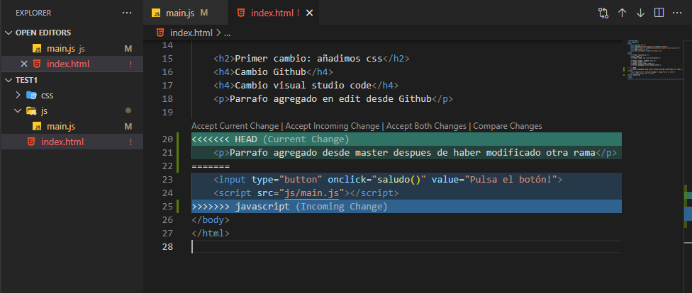

GIT - BASICS
Links
//GIT BASICS
git init
git clone https://github.com/XXXXXX
git remote add origin https://github.com/XXXXXXXX
git status
git log
git diff
git rm --cached {file} - Eliminar archivo en repositorio online github o gitlab
git add . / {file}
git commit -m "message"
git pull
git push origin main
git push -u origin master
git branch
git branch {newName}
git checkout {branchame}
git merge {branchname} (must checkout to main for example) origin main
git branch -d {name}
git branch -m master main : rename master to main in local
git mv {file} {folder}/{filename} Move a file inside a directory
git log --oneline
git reset --hard
//GIT BASICS
PHoto
Ramas: Divide un archivo en 2 ramas o flujos de trabajo. Para que dos programadores puedan trabajar en un flujo específico
Consejo:Crear archivos de respaldouna vez hay suficiente complejidad, con cambios más específicos
Abrir: Gitbash desde Windows o click derecho desde la carpeta: GitBash here
VSStudio: Ctrl + ñ terminal
Configurar:
git config --global user.name "Al XXX"
git config --global user.email "xxxx@gmail.com"
git config --list
git config XXX (one of the setting)
git help > git help commit
clear
U Unfollow
A added
M Modificaciones
// SSH
// GIT + GITLAB
// ERRORS
git remote add {url}// You can add one for github and another for gitlab
After clone:
fatal: not a git repository (or any of the parent directories): .git -> move to directory ( cd {name})
git remote -v
error: src refspec master does not match any. No master branch-> git checkout -b master
git push -u origin master
git pull {main}
git reset --hard (after deleting files locally, you can recover them like this)
//GIT COMANDS
git init: creamos directorio de trabajo oculto. Para ver carpeta > vista > mostrar u ocultar / elementos ocultos
git add xxxxx : Añadimos al area de staging/ensayo el archivo
git add . : Añadir todos los archivos
git commit xxxx: manda los archivos que se hayan añadido del area de staging/ensayo al area de repositorio local. manda los archivos que esten añadidos solo, no todos los de la carpeta
add + commit: git commit -am XXXX: añade y manda archivos
git status -s: ver los archivos que no están en el repositorio, o los que se han modificado pero no se han mandado aun
git log --oneline : listado de todas las copias con el codigo y descripcion
git reset --hard : Restauracion del archivo al código de la instantanea que nos interesa retornar
git commit --amend : Modificar los detalles del cambio Titulo
git diff: See differences
git remote remove origin
//GIT ACCIONES EJEMPLO
creamos carpeta, archivo html, carpetas css y js con archivos
git init: creamos el directorio
consola git status -s : muestra lo que hay en el proyecto y cosas sin agregar a git,
git add index.html
git commit -m "Comienzo del proyecto"
Si hacemos cambio en el archivo nos aparecera con git status -s:
Hacer un respaldo tras cambios:
1. Hay que hacer git add del archivo o archivos
2. git commit -m "Primer Cambio del proyecto"
git log --oneline: Vemos los cambios
restaurar
// SUBIR A GITHUB DESDE CONSOLA
Importante: la cuenta de github de manera que permita push que puedan mostrar email. Ver settings emails
Crear repositorio > Opciones quick setup > "push an existing repository from the command line"
git remote add origin https://github.com/XXXXXXXX
git push origin master: pide introducir usuario y contraseña
//Optional
git branch -M main
git push -u origin main
git checkout // para ver los cambios a subir
// MULTIPLE REMOTES
Crear repositorio > Opciones quick setup > "push an existing repository from the command line"
git remote add origin https://github.com/XXXXXXXX
git push origin main
git remote add origin2 https://gitlab.com/XXXXX
git push origin2 main
//GIT PULL - MODIFICAR EN GITHUB Y CLONAR repositorio
Modificamos archivos en github y damos a commit changes
Traer las modificaciones de remoto a local: git pull
//GIT TAGS
Versiones del proyecto
Github > repositorio
Consola git tag 18-07-21v1 "Version 1.0 del proyecto" (si se usa git log --oneline se ve pero no se ha subido a Gitub)
Para subir a github: git push --tags
//GIT CLONE
Si perdemos un proyecto en local, lo podemos clonar desde github
Vamos al repositorio y en el boton de code copiamos la url
Consola desde la carpeta: git clone https://github.com/XXXXXX
Alternativamente se puede Descargar el zip
//RAMAS o BRANCH
Rama o linea de tiempo
Puede haber varias, merge para unir
Problemas: modificacion de un mosm archivo en rama master y rama alternativa
Crear:
git branch nombreRama Ex: git branch javascript
Ver donde estamos:
git branch: Nos indica las ramas y con asterisco y verde, si hago modificaciones y hago comits será en la que esté
Cambiar rama:
git checkout nombreRama Ex: git checkout javascript
git checkout master
CREAR REMOTO
git push {origin} {testbranch}
Hacemos cambios en los archivos
git add .
git commit -m "Definicion"
Al cambiar de rama en consola, se cambian los archivos en visual code acordemente
DELETE
salir de la rama
Git checkout {nameofbranchtogo}
git branch -d {name}
git branch -D {name} forces if no merged
DELETE REMOTE
git push remote --delete {name}
git push origin --delete {name}
//GIT MERGE
Se hace desde la rama master
git merge nameBranch // git merge javascript
after merge git push origin main // **
and delete the other branch
ERRORES: Si hemos cambiado diferentes cosas en diferentes branches
